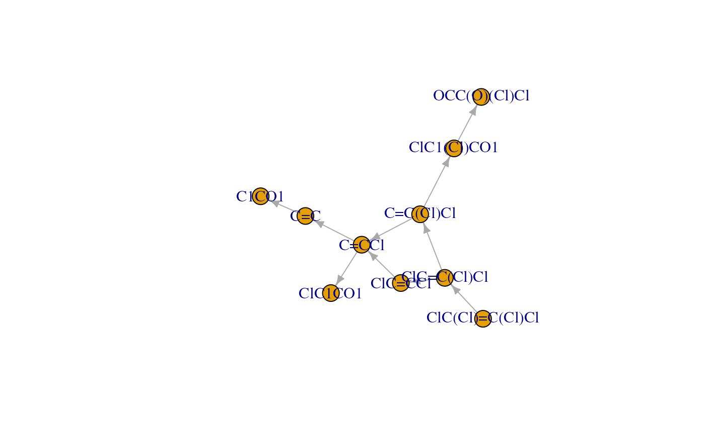
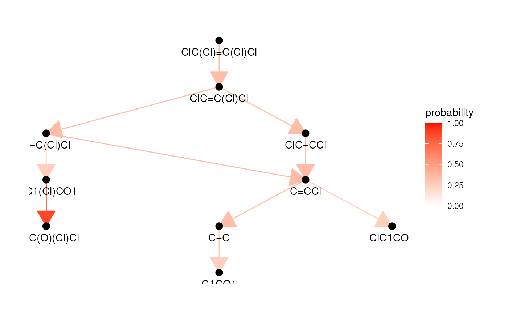

epModel predicts the biotransformation pathway for a compound expressed with
smiles using the selected model setting.
Details
For transparency, the performed raw API call can be accessed with
attr(x, "call"), where x is the output of epModel.
Examples
if( is_active ){
library(igraph)
library(ggraph)
# Perform login with your credentials
epLogin(username, password)
# Define smiles of interest
smiles <- "ClC(Cl)=C(Cl)Cl"
# Perform pathway prediction with enviFormer
former_out <- epModel(smiles)
# List available model settings
set_df <- epList("setting")
# View some model settings
head(set_df)
# Set id for PEPPER model setting
set_name <- "Global Setting - ECC and App Domain - PEPPER"
set_id <- set_df$id[set_df$name == set_name]
# Perform pathway prediction with PEPPER
pepper_out <- epModel(smiles, set_id)
# Convert model output to igraph object
path_graph <- graph_from_data_frame(
pepper_out$edges,
vertices = pepper_out$nodes
)
# Visualise predicted pathway
plot(path_graph)
# Visualise with ggraph
ggraph(path_graph, layout = "sugiyama") +
geom_edge_link(
aes(colour = probability),
arrow = arrow(type = "closed")
) +
geom_node_point(size = 3) +
geom_node_text(aes(label = name), vjust = 2) +
scale_edge_colour_continuous(
limits = c(0, 1), low = "white", high = "red"
) +
theme_graph(base_family = "")
}
#>
#> Attaching package: ‘igraph’
#> The following objects are masked from ‘package:stats’:
#>
#> decompose, spectrum
#> The following object is masked from ‘package:base’:
#>
#> union
#> Loading required package: ggplot2
#> Hi nature lover, welcome to enviPath!

